ClawAll Docs
Runtime GuideOperator handbook for gateway enforcement, governance controls, and Sui on-chain constraints. Select a section from the left to focus on one topic at a time.
Overview
What ClawAll Is
ClawAll is a security-focused execution layer for OpenClaw. It translates user or agent requests into deterministic policy-checked actions, then enforces those actions using both off-chain controls and on-chain Move constraints. The design target is to survive realistic compromise scenarios without allowing silent fund drain.
What ClawAll Is Not
- Not a pure wallet UI. It is a policy gateway with a wallet interface.
- Not trust-me middleware. It is fail-closed by default for protected actions.
- Not only prompt-level safety. Security survives outside model behavior via Move checks.
Core Guarantees
- Intent firewall protects command and transfer pathways before execution.
- Risk engine and policy engine can require operator approval before funds move.
- Move-level
TransferConstraint+GlobalFreezeprovide on-chain final enforcement. - Policy integrity checks block if runtime code hash mismatches expected policy bundle.
- Optional policy anchor checks tie runtime policy hash to an on-chain anchor object.
- Sui-native vault path supports
0x2::sui::SUIand additional coin types held by the vault.
Quick Start Roles
GuardCap, not policy-admin authority).
Operational Signals
Architecture & Core Concepts

1. The Intent Orchestration Pipeline
ClawAll treats every action as an Intent. An intent is a structured object containing the domain (OS, FS, BROWSER, BLOCKCHAIN), the requested action, parameters, and provenance metadata. This allows for a unified security pipeline where cross-domain signals can trigger global safety responses.
[ Intent ] -> [ Intent Firewall ] -> [ Risk Engine ] -> [ Policy Engine ] -> [ Execution ]2. Defense-in-Depth Layers
- Intent Firewall: Performs static analysis on the intent. For OS commands, it uses a custom shell tokenizer to prevent injection and restricts execution to a strict allow-list of binaries. For blockchain, it validates basic constraints like amount and recipient format.
- Risk Engine: Calculates a dynamic risk score (0-100) based on velocity, cumulative spend, recipient novelty, and prior suspicious behavior. It correlates OS-level signals (like a blocked command) to escalate blockchain-level risk.
- Policy Engine: Maps risk scores to enforcement actions:
ALLOW,BLOCK, orREQUIRE_APPROVAL. - On-Chain Enforcement (Move): Off-chain decisions are finalized by minting a
TransferConstrainton Sui. This object binds the transaction to a specificmax_amount,allowed_recipient, andexpiry_ms, ensuring that even a compromised private key cannot deviate from the agent's authorized parameters.
3. Data Flow For Protected Transfer
- User intent arrives via slash command or NL parsing.
- Gateway resolves token symbol and base units.
- Risk score and policy decision are computed.
- If required, operator approval gate runs (Telegram workflow).
- Constraint is prepared and signed route executes transaction.
- Audit proof is generated and attached to result metadata.
4. Policy Cap Isolation & Integrity
ClawAll implements a Split-Custody Trust Model. The runtime agent only holds a GuardCap, which allows it to mint constraints but not to change the security policy. The PolicyAdminCap (held in separate cold/admin custody) is required to update the on-chain Policy Anchor (a hash of the authorized codebase) or to unfreeze the system via the GlobalFreeze gate.
5. Fail-Closed Design
Security is the priority. If any of the following occur, the system blocks execution:
- Integrity Failure: Local code hash does not match the signed policy bundle.
- Anchor Failure: Signed policy hash does not match the on-chain
PolicyAnchor. - Audit Failure: Walrus upload for the transaction proposal fails.
- Freeze Active: Either the off-chain kill-switch or the on-chain
GlobalFreezeis engaged.
6. Runtime/Chain Responsibility Split
Threat Model & Policy Control
In-Scope Attacker Behaviors
- Prompt Injection: Malicious instructions hidden in web content or email.
- OS Escalation: Using authorized tools (curl/wget) to access sensitive paths or egress untrusted data.
- Drain Attacks: Rapid small-value transfers designed to bypass total-amount velocity checks.
- Policy Tamper: Attempting to modify off-chain security code to self-approve high-risk actions.
- Key Compromise: Using the agent's private key directly to bypass off-chain controls.
Out-of-Scope / Residual Risks
- Compromise of both runtime key and admin wallet key at the same time.
- Compromise of operator Telegram account without secondary governance controls.
- Protocol-level risks in third-party tokens or external price feeds.
The Policy Cap Isolation (Sui Native)
A central pillar of the security model is the Policy Cap. In a production deployment, the PolicyAdminCap is kept in a separate, secure wallet (not the running agent). The running agent only holds a GuardCap.
- The Agent (GuardCap): Can only authorize transfers that strictly match constraints generated by the risk engine.
- The Admin (PolicyAdminCap): Required to update the on-chain Policy Anchor (the hash of authorized code) or toggle the Global Freeze.
- The Safety Lock: The system includes a
assertRuntimeCapIsolationcheck that immediately freezes the agent if it detects thePolicyAdminCapID in the runtime configuration, preventing an escalation of privilege if the runtime is compromised.
Can Policy Keys Be Extracted From Package ID?
No. A package ID is public metadata; it does not expose private keys. Attackers can read object IDs and module code from chain, but they cannot derive the private key controlling the admin account from on-chain state alone.
PolicyAdminCap ID are public references, not secrets. Security comes from account key custody and capability ownership rules.Control Matrix
Threat-to-Control Mapping
This matrix maps key threats to primary controls and expected outcomes.
Execution Outcomes
| Threat | Primary Control | Layer | Expected Outcome |
|---|---|---|---|
| Destructive OS command | Intent firewall + OS policy guard | Runtime | Blocked, may trigger freeze |
| Risky transfer | Risk engine + governance approval | Runtime + Telegram | Approval required or blocked |
| Policy file tamper | Policy signature verification | Runtime | Blocked + frozen |
| Anchor mismatch | On-chain hash anchor check | Runtime + Sui | Blocked + frozen |
| Runtime bypass attempt | Move GlobalFreeze gate |
On-chain | Transfer aborts on-chain |
| Missing audit write | Walrus fail-closed mode | Runtime audit | Execution blocked |
ClawAll Setup
Local Dashboard under Operations for observability.0. Recommended Operator Flow
npm install
npm run setup
npm run gateway
openclaw clawall status1. Prerequisites
- Node.js 20+ and npm available on PATH.
- Sui CLI installed and wallet already initialized.
- OpenClaw installed and runnable from terminal.
- One funded admin wallet (for bootstrap only) and one agent wallet (runtime).
2. Standard Bootstrap Sequence
npm installnpm install
npm run setup
npm run gatewaynpm run topup for quick refill only (vault funding without rerunning full bootstrap/governance flow).npm run setup is the primary setup workflow and includes bootstrap + runtime/plugin configuration.3. Policy Bootstrap Modes
Use a strict mode whenever possible. Integrity-only is fallback for local dev when policy admin cap is intentionally unavailable.
| Mode | Command | Result |
|---|---|---|
strict-anchor |
POLICY_CAP_ID_ONCE=0x... npm run setup |
Anchor setup runs, mode remains strict. |
integrity-only |
npm run setup |
Anchor step skipped safely, POLICY_ANCHOR_MODE=off. |
POLICY_CAP_ID_ONCE is setup-only input. Runtime must keep POLICY_CAP_ID= empty.4. Install OpenClaw Plugin
npm run setup5. Restart Client
Restart OpenClaw app and open a new chat session so plugin routes and slash commands are loaded.
6. Verify Runtime
curl -s http://127.0.0.1:3011/health
openclaw clawall status7. No-Tamper Setup Checklist
- Ensure strict policy setup was run after latest policy changes.
- Do not rerun setup in a way that downgrades anchor mode unintentionally.
- If policy files changed, re-anchor policy hash before protected transfer tests.
- Keep
POLICY_BUNDLE_SHA256synced with latest signed policy bundle hash.
8. Fixing Tamper Guard "expected vs got" Hash Error
- Confirm current runtime policy hash in
.envand compare with strict setup output. - Run strict policy setup again using admin flow to write the correct hash + anchor.
- Run
npm run setupto refresh plugin/runtime config only after strict policy step succeeds. - Restart gateway/OpenClaw and re-run a small transfer test.
rg -n "^(POLICY_BUNDLE_SHA256|POLICY_ANCHOR_ID|POLICY_INTEGRITY_MODE|POLICY_ANCHOR_MODE)=" .env
npm run setup
openclaw clawall statusy to "Review/edit .env", setup helper runs first and plugin install may appear twice. This is expected in interactive mode./health is down, start the gateway first. If status works in CLI but not chat, restart OpenClaw and start a new conversation.CLAWALL_GATEWAY_VERBOSE=1 npm run gateway.9. Final Verification (Must Pass)
curl -s http://127.0.0.1:3011/healthreturnsok: true.openclaw clawall walletreturns balances without schema warnings.- At least one guarded transfer returns digest + explorer link.
- At least one unsafe scenario is blocked by policy/firewall/freeze layer.
Testnet & Faucet
1. Configure Testnet RPC
Set your RPC endpoint to Sui testnet in .env, then confirm chain connectivity before any setup flow.
RPC_URL=https://fullnode.testnet.sui.io:443
sui client active-address
sui client gas2. Get Testnet SUI (Gas)
Use the official Sui faucet or supported faucet channels to fund both wallets with enough SUI for setup and demo transfers.
- Fund admin wallet for bootstrap/governance transactions.
- Fund agent wallet for runtime transaction fees.
- Keep extra margin for repeated demo attempts.
3. Verify Wallet Balances
openclaw clawall wallet
sui client balance4. Non-SUI Demo Tokens
For USDC/HASUI/HAWAL/WAL test flows, your admin wallet must already hold those test assets. ClawAll cannot mint assets; it only secures transfer paths for available balances.
5. Faucet/Network Troubleshooting
| Issue | Likely Cause | Action |
|---|---|---|
| No gas balance after faucet | Wrong wallet address or faucet delay | Recheck active address and retry after propagation delay |
| Setup tx fails | Insufficient SUI gas | Refill SUI and rerun setup step |
| Transfer rejected due to epoch/expiry timing | Old constraint window | Recreate transfer through ClawAll so fresh constraint is minted |
Configuration
Required Runtime Values
Required runtime values in .env:
PACKAGE_ID=
RPC_URL=
PRIVATE_KEY=
GUARD_CAP_ID=
FREEZE_STATE_ID=
CLAWALL_PLUGIN_KEY=
CLAWALL_ENFORCE_PLUGIN_GATE=1Secrets and Custody Rules
- Do not store admin private key in
.envor repo files. - Use admin private key only in interactive one-time bootstrap flows.
- Runtime key should be least-privilege and isolated from policy-admin authority.
- Never commit
.envor shell history containing private keys.
| Variable | Purpose | Required |
|---|---|---|
PACKAGE_ID |
Deployed Move package used by gateway transfer calls. | Yes |
PRIVATE_KEY |
Runtime signer for guarded execution path. | Yes |
ADMIN_PRIVATE_KEY |
Not persisted. Use interactive prompt during admin setup only. | No |
CLAWALL_PLUGIN_KEY |
Shared secret between plugin and gateway transfer endpoint. | Yes |
TG_OPERATOR_IDS |
Allowed operator user IDs for approval/freeze commands. | Recommended |
POLICY_CAP_ID_ONCE |
One-time policy admin cap used only during bootstrap commands. | Optional |
PRIVACY_CAP_ID (if enabled) |
Sensitive capability ID; treat as privileged metadata and avoid broad sharing. | Optional |
Recommended Security Mode
Recommended safety mode:
POLICY_INTEGRITY_MODE=strict
POLICY_ANCHOR_MODE=strict
ENFORCE_CAP_ISOLATION=1
POLICY_CAP_ID=Policy/Anchor Consistency Values
POLICY_BUNDLE_SHA256=...
POLICY_ANCHOR_ID=0x...
POLICY_ANCHOR_MODE=strictPOLICY_ANCHOR_MODE=off while integrity is strict, runtime still checks local bundle hash but does not require on-chain anchor match.Setup-Only Policy Input
Setup-only policy input:
POLICY_CAP_ID_ONCE=0x... # set only for setup command
# after setup, keep POLICY_CAP_ID_ONCE emptyPrivacy Cap Handling Guidelines
- Treat privacy cap IDs as sensitive operational metadata.
- Avoid logging full IDs in public demos/screenshots.
- If leaked, rotate associated policy/cap state according to your governance process.
- Never bundle privacy capabilities into general runtime automation unless required.
Market Price Configuration
Pricing config (optional but recommended):
COINGECKO_DEMO_API_KEY=CG-xxxx
MARKET_PRICE_REQUEST_MODE=single
MARKET_COINGECKO_ID_BY_SYMBOL_JSON={"USDC":"usd-coin","HASUI":"haedal-staked-sui","WAL":"walrus-2","HAWAL":"haedal-staked-wal"}MARKET_PRICE_REQUEST_MODE=single is preferred in production to fetch only requested symbols and reduce API quota usage.OpenClaw Plugin Config Compatibility
Use only schema-approved plugin install fields. Non-standard keys in ~/.openclaw/openclaw.json cause warnings and may disable strict config validation.
openclaw plugins doctor
openclaw doctor --fixUsage
Chat Commands (Deterministic)
- Transfer via policy path:
/clawall_transfer --amount 10000000 --recipient 0x... - Transfer + exact USD quote in one step:
/clawall_transfer_quote send 0.0324 sui to 0x... and tell me exact usd value - Check status:
/clawall_status - Wallet balances:
/clawall_wallet - Price lookup:
/clawall_price --unit wal --amount 1000000000 - Wallet + price snapshot together:
/clawall_snapshot show me price of sui and my wallet bal
Natural Language Routing
ClawAll supports natural text, but critical flows should still use slash commands for determinism. NL parser maps phrases to canonical actions (wallet, transfer, status, price).
/clawall_transfer --amount 4300 --unit usdc --recipient 0x...
send 0.0043 usdc to 0x... and show my balance
CLI Equivalents
openclaw clawall status
openclaw clawall wallet
openclaw clawall transfer --amount 10000000 --recipient 0x...
openclaw clawall transfer-quote --amount 0.0324 --unit sui --recipient 0x...
openclaw clawall price --unit hasui --amount 1000000000Human-Readable Response Patterns
- Ask explicitly:
reply in simple human textorno json. - For transfer proofs ask:
include tx digest + explorer link + updated balances. - For wallet clarity ask:
group by token and total both USDC coins together.
Operational Guidance
- Use slash commands for security-critical actions and incident playbooks.
- Use natural language for low-risk reads (
status,wallet, price checks). - Combined intent is auto-routed:
show me price of sui and my wallet bal→/clawall_snapshot .... - Treat price lookups as advisory if upstream market data is unavailable.
- Natural transfer bundles are supported:
send 0.034 sui and 0.0034 wal to 0x.... - If request includes wallet balance, transfer response includes a post-transfer wallet snapshot.
Command Pitfalls
- If CLI reports unknown option (for example
--unit), update plugin/build and rerunnpm run setup. - If NL request gives wrong token inference, force with explicit
--unitor fullcoin_type. - If wallet tool fails with schema error, run OpenClaw plugin doctor and validate gateway/plugin version alignment.
Price API
Endpoint: GET /v1/price?coin_type=<type>&amount=<base_units_optional>
curl -s "http://127.0.0.1:3011/v1/price?coin_type=0x2::sui::SUI&amount=1000000000"Response fields include price_usd, decimals, symbol, and transfer_usd (when amount is provided).
Supported by default mapping: USDC, HASUI, WAL, HAWAL. Extend via env mappings.
Security Position On Pricing
- Price lookup is informational and should not be the sole block/allow signal for secure transfer execution.
- Risk engine should remain safe when price feed is unavailable.
- When price feed fails, show advisory warning but keep core constraint checks active.
Examples
/clawall_price --unit usdc --amount 1000000000
/clawall_price --unit wal --amount 5000000000
openclaw clawall price --unit hasui --amount 1000000000Token Symbol Tips
- Use normalized uppercase symbols internally (
USDC,HASUI,HAWAL,WAL). - If a symbol is not recognized, pass full
coin_type. - For hacked/demo tokens, set explicit mapping in
MARKET_COINGECKO_ID_BY_SYMBOL_JSON.
Fallback Model
- Primary source: CoinGecko id mapping by symbol.
- Optional fallback: fixed USD overrides for emergency mode.
- Stable assets can be treated with tighter default bounds.
Gateway API
Service Endpoints
Service endpoints:
GET /healthGET /v1/statusGET /v1/walletGET /v1/pricePOST /v1/checkPOST /v1/signed-transfer(plugin-key gated)
Health and Status
curl -s http://127.0.0.1:3011/health
curl -s http://127.0.0.1:3011/v1/statusVerbose Debug Mode
CLAWALL_GATEWAY_VERBOSE=1 npm run gatewayLogs each request path + status, and prints explicit errors for 4xx/5xx responses.
Protected Transfer Route
Protected transfer route requires plugin key:
curl -s -X POST http://127.0.0.1:3011/v1/signed-transfer -H 'content-type: application/json' -H "x-clawall-plugin-key: $CLAWALL_PLUGIN_KEY" -d '{"amount":10000000,"recipient":"0x..."}'/v1/signed-transfer publicly without network-level controls. Keep it private to OpenClaw runtime and trusted operators.Plugin Provenance & Warning-Free Install
- Always install plugin through
openclaw plugins install ...instead of manual file copy. - Keep
plugins.allowexplicit with only trusted plugin IDs. - Use OpenClaw doctor tools to normalize schema and remove stale keys.
openclaw plugins doctor
openclaw doctor --fix
openclaw plugins listExpected Healthy Signals
openclaw plugins doctorreturns no issues.openclaw clawall wallethas no config schema warnings.- Gateway health endpoint returns
okand version metadata.
Local Dashboard
Purpose
The dashboard is intended for local operator visibility only. It should be launched through a local proxy so browser clients never need the plugin key.
src/public and are intentionally excluded from Netlify-hosted public site output.Run Sequence
# terminal 1
npm run gateway
# terminal 2
npm run dashboardOpen In Browser
http://127.0.0.1:3020/dashboard.htmlHow It Works
dashboard-local.mjsserves static dashboard files fromsrc/local/dashboard.- It proxies
/api/*to local gatewayhttp://127.0.0.1:3011. - The proxy injects plugin key server-side from
CLAWALL_PLUGIN_KEY. - Frontend uses
/apiby default, avoiding direct cross-origin calls.
Environment Variables (Optional)
CLAWALL_DASHBOARD_HOST=127.0.0.1
CLAWALL_DASHBOARD_PORT=3020
CLAWALL_DASHBOARD_GATEWAY=http://127.0.0.1:3011Operational Checklist
- Keep gateway bound to
127.0.0.1only for local security boundary. - Do not expose dashboard-local port through public tunnels in production contexts.
- If dashboard shows endpoint errors, verify gateway is running and plugin key is configured in local env.
- Use dashboard for observability, not as the primary source of truth for critical approvals.
Security
Hard Requirements
- Split custody: runtime host must not hold
POLICY_CAP_ID. - On-chain freeze controls transfer execution independently of runtime state.
- Policy integrity and anchor checks trigger freeze on tamper.
- Plugin key gate prevents direct transfer-route bypass.
GuardCap Protection Rules
- GuardCap is operationally sensitive; do not publish full ID in public recordings.
- Run runtime host as least-privileged user with isolated filesystem permissions.
- Restrict who can access terminal/session where runtime key and guard config are present.
- If GuardCap is suspected exposed, engage freeze and rotate to a new operational setup.
What Happens If Agent Key Is Stolen?
A stolen agent key alone should not allow unrestricted drain when ClawAll is correctly configured, because transfer parameters are bound by policy path + Move constraints and can be globally halted via freeze controls.
Verification Checklist
- Run routing proof to validate plugin-key gate and policy path.
- Run tests after config changes and before deployment.
- Verify freeze/resume commands work from approved operators only.
npm run security:prove-routing
npm testPolicy Mode Checks
grep -E 'POLICY_(INTEGRITY_MODE|ANCHOR_MODE|CAP_ID|CAP_ID_ONCE)' .env
# expected runtime:
# POLICY_INTEGRITY_MODE=strict
# POLICY_CAP_ID=
# POLICY_CAP_ID_ONCE=Incident Response Runbook
- Trigger freeze path immediately (runtime + on-chain).
- Stop gateway and OpenClaw runtime processes.
- Audit latest transfer/audit logs and verify unauthorized digests.
- Rotate runtime secrets and rebuild from clean policy anchor.
- Resume only after strict-mode checks pass end-to-end.
Testing
Automated Checks
npm test
cd chain/sui && sui move build
npm run benchmark:redteam
npm run forensics:bundlePre-Demo Smoke Test
npm run setup
curl -s http://127.0.0.1:3011/health
openclaw plugins doctor
openclaw clawall status
openclaw clawall walletManual Test Matrix
| Scenario | Action | Expected |
|---|---|---|
| Normal transfer | Demo option 1 |
Executes unless freeze is active |
| Medium/high risk | Demo option 2/3 |
Governance approval path is triggered |
| OS attack | Demo option 4 |
Blocked at firewall, freeze behavior visible |
| Tamper simulation | Demo option 9 |
Blocked and frozen by integrity/anchor checks |
| Bypass route | Direct /v1/signed-transfer without key |
401 unauthorized |
| Tamper hash mismatch | Edit policy file then run transfer | TAMPER_GUARD blocks with expected vs got hash |
| Recovery after tamper | Run strict setup + runtime setup | Transfer route restored with matching policy hash |
Evidence Checklist For Submission
- Terminal clip showing successful guarded transfer and digest.
- Clip showing blocked tamper scenario and freeze behavior.
- Clip showing policy restore flow and successful post-fix transfer.
- Plugin doctor output with no unresolved issues.
Judge Demo Flow & Narrative
The Narrative: Secure-by-Design AI
ClawAll is not just an off-chain API gate. It is a Full-Stack Security System that uses Move to enforce AI safety on-chain. The demo should show that the security is rooted in the blockchain, not just in the agent's code.
Demo Runbook (4-6 Minutes)
- Layer 1: Intent Firewall: Show the agent successfully running a safe command like
ls, then immediately show it blocked when trying tocat /etc/passwd. This demonstrates that the firewall is understanding and sanitizing OS commands. - Layer 2: Risk Scoring & Governance: Execute a transfer. Show it trigger a "Medium Risk" status and send a real alert to Telegram. Approve it via the bot to show the "human-in-the-loop" gate.
- Layer 3: On-Chain Enforcer: Highlight the
TransferConstraintandGlobalFreeze. Explain that even if the agent's private key were stolen, the attacker cannot send funds to a different address or for a higher amount than what the agent authorized. - Layer 4: Policy Integrity & Self-Defense: Modify a single character in the policy code. Show the agent immediately detecting the tamper and Freezing itself. Explain the
PolicyAnchorcheck: the agent verifies its own code hash against a hash anchored on Sui.
FAQ
What if the agent edits local state to unfreeze itself?
Local edits alone are insufficient. Integrity checks, optional anchor checks, and Move-level GlobalFreeze still gate execution.
What if Telegram is unavailable?
Actions requiring approval remain unapproved. Protected execution remains fail-closed.
Why block when Walrus audit fails?
ClawAll uses proof-first security for critical paths: no audit evidence, no protected execution.
Can runtime safely keep policy admin cap?
No. Runtime should keep POLICY_CAP_ID= empty; use POLICY_CAP_ID_ONCE only for setup commands.
Can attackers derive admin private key from package or object IDs?
No. IDs are public references, not private credentials.
Should pricing block transfers?
No by default. Price is advisory context; core security should rely on policy/approval/constraint controls.
Can I run demo with one wallet only?
Possible for basic demos, but split-wallet model (admin + agent) is strongly recommended for security-track judging.
Troubleshooting
Common Issues
- If CLI works but GUI chat does not, restart OpenClaw and open a new chat.
- If natural text misses routing, use explicit slash commands.
- If price is unavailable, verify
COINGECKO_DEMO_API_KEYand token symbol mappings in.env. - If
/v1/signed-transferfails unauthorized, verify pluginapi_keymatchesCLAWALL_PLUGIN_KEY. - If setup prints
policy mode: integrity-onlywith warning about missingPOLICY_CAP_ID_ONCE, rerun setup with one-time cap to restore strict anchor mode.
Tamper Guard Hash Mismatch
Symptom: transfer blocked with message like expected=... got=....
npm run setup
openclaw clawall statusOpenClaw Config Warning About Plugin Install Keys
If you see invalid plugins.installs schema keys, clean config with doctor and reinstall through official plugin install command path.
openclaw doctor --fix
openclaw plugins doctor
npm run setupPlugin "loaded without install provenance"
This means plugin exists on disk but OpenClaw install metadata is missing or stale. Reinstall plugin and ensure allowlist includes plugin ID.
Quick Diagnostics
curl -s http://127.0.0.1:3011/health
openclaw clawall status
openclaw clawall price --unit wal --amount 1000000000
POLICY_CAP_ID_ONCE=0x... npm run setupWhen Setup Reverts Anchor Mode To Off
If runtime setup intentionally runs integrity-only mode, your strict anchor requirement may be disabled in .env. For strict demos, always finish with strict policy setup stage and verify mode values before recording.
rg -n "^(POLICY_INTEGRITY_MODE|POLICY_ANCHOR_MODE|POLICY_BUNDLE_SHA256|POLICY_ANCHOR_ID)=" .env